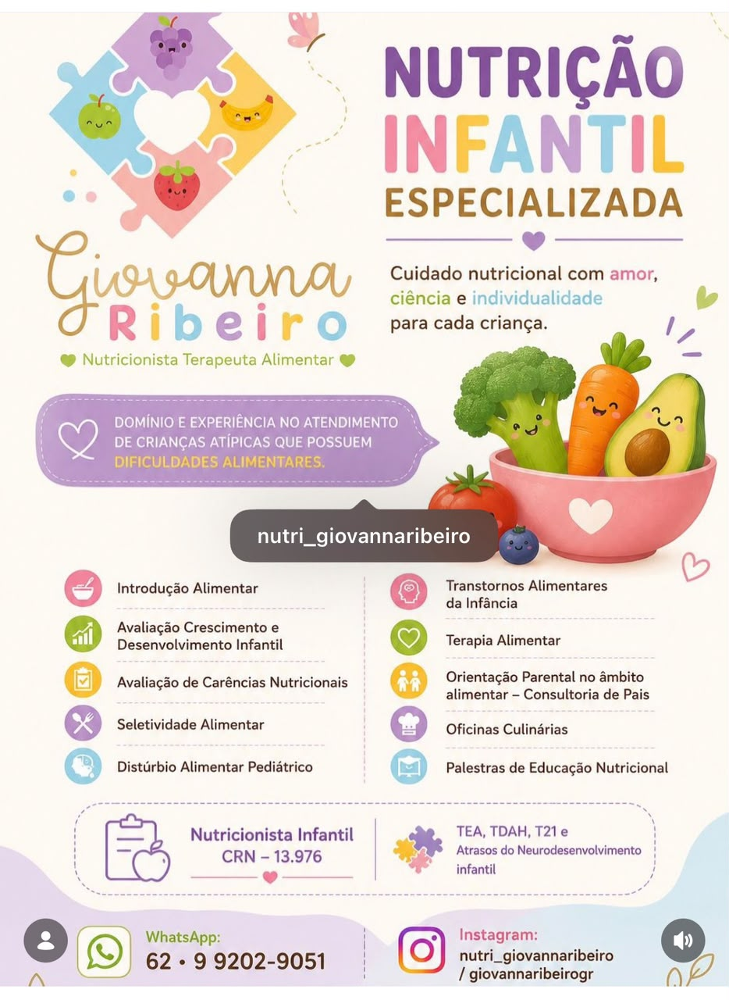
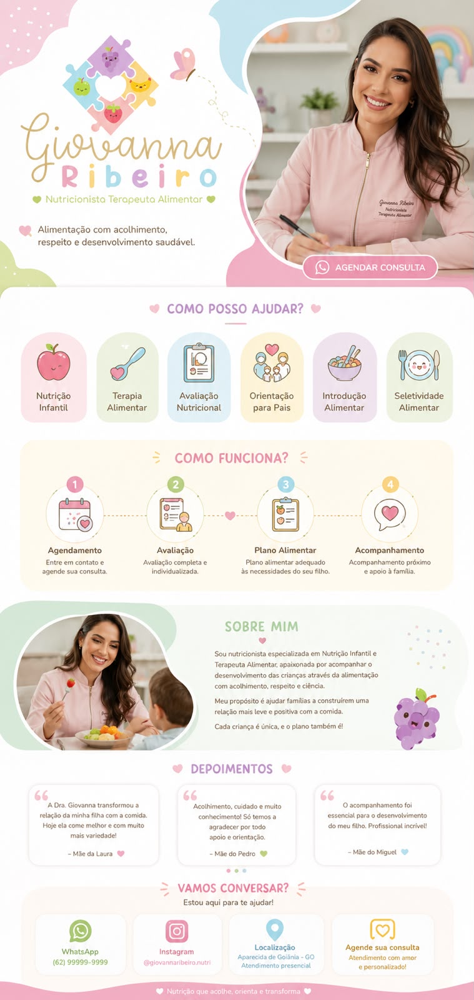

Nutrição que transforma gerações.
Especialista em seletividade e introdução alimentar. Uma abordagem leve, lúdica e baseada em ciência para crianças felizes e saudáveis.

Nossas Especialidades
Tudo o que sua família precisa para ter paz na hora da refeição.
Seletividade Alimentar e Dificuldades
Estratégias lúdicas para ampliar o repertório de crianças que recusam alimentos, respeitando o tempo e o limite de cada uma.
Saber mais
Introdução Alimentar
O primeiro contato com a comida deve ser mágico e seguro.
Nutrição TEA & TDAH
Abordagem específica para particularidades sensoriais e metabólicas.
Reeducação Alimentar Familiar
Não cuidamos apenas da criança. Ajustamos a rotina e o ambiente para que toda a família desfrute de saúde junta.

Dra. Giovanna Ribeiro
Transformando pratos em momentos inesquecíveis de carinho e saúde.
Como especialista em Nutrição Materno-Infantil e Terapia Alimentar, meu objetivo nunca foi apenas prescrever dietas. Minha missão é devolver a tranquilidade para as famílias na hora de comer.
Com acolhimento e embasamento científico, construímos juntos uma relação de amor entre o seu filho e os alimentos, sem traumas e sem pressão.